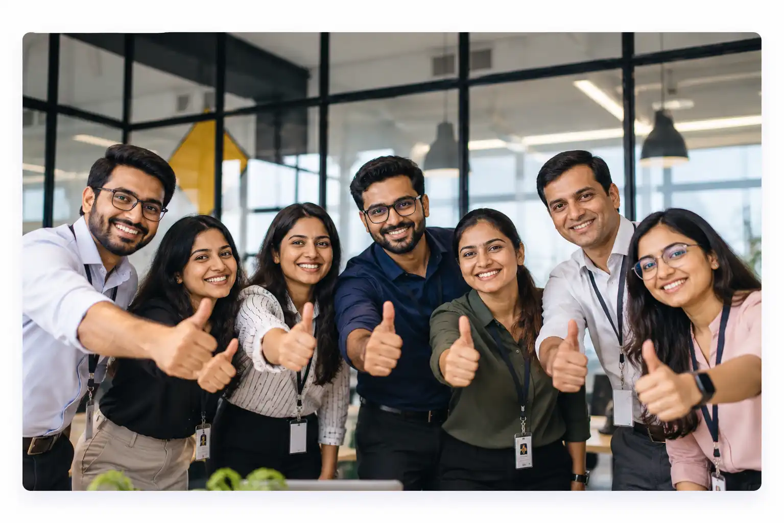
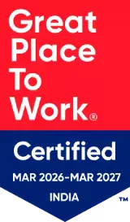
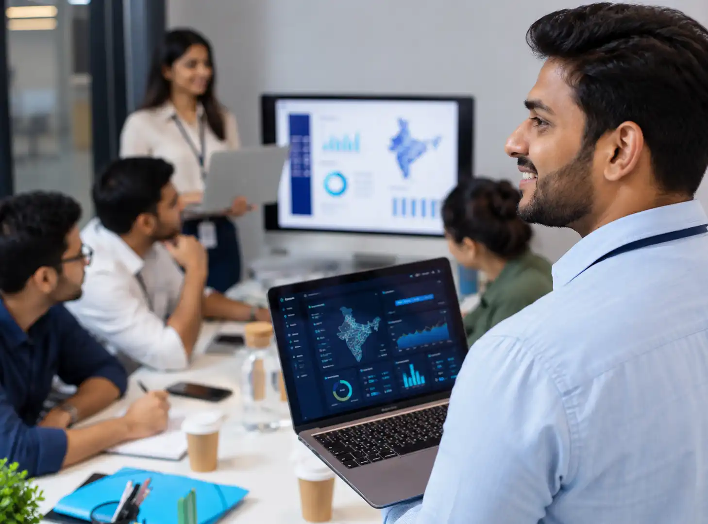

LIFE AT CS TECH Ai
Sharing a common goal, we invest in your development, encourage new ideas and reward your efforts. With so many projects and so much to do, chances are that you will be hired for what you love to do.

WHY JOIN US
CS TECH Ai is a unique, creative and dynamic place to work. Together, we work, laugh, and brainstorm. We invest in your development, encourage your ideas and reward your efforts.
Each person is unique, and we develop opportunities to harness this uniqueness. We don’t provide cookie-cutter roles – we keep innovating and adapting our job descriptions to meet the changing needs of the business.

Curiosity. Creativity. Team-play. And passion to perform. Our selection process is rigorous, but you will be mentored at every stage – we seek team-players with a drive to learn.
JOIN OUR TEAM
51 open roles
Retired Revenue Officer with a designation not below the rank of Tehsildar / SDM, with extensive experience in revenue administration, land records, property rights, and land-related matters.
The Junior MIS Expert will support ULBs in real-time monitoring, database maintenance, MIS activities, reporting and geotagging-related activities.
We are looking for a CAD Design & GD&T Engineer to support Cobot Cell and AMR design engineering, including 2D/3D layout development, mechanical/fixture/tooling design and creation of manufacturing-ready drawings with accurate GD&T.
Mechanical Design/CAD Engineer with 3–6 years of relevant experience, strong CAD and GD&T fundamentals, manufacturing knowledge and the ability to work effectively with design, manufacturing, quality and supplier teams in a fast-paced engineering environment.
Key Skills: CAD Design | Mechanical Design | GD&T | ASME Y14.5 | ISO 1101 | NX | CATIA | SolidWorks | Creo | AutoCAD | Teamcenter | Tolerance Stack-up | Cobot | AMR | Fixture | Tooling | EOAT | DFM/DFA | FAI | PPAP
Project: 12 months | Work Model: Engineering support / project-based
We are looking for a DPA & DVA Engineer to support ATP products using virtual build and dimensional variation simulation to assess assembly feasibility, dimensional variation, fit, function and appearance before physical builds.
DVA/Dimensional Engineering professional with 3–5+ years of relevant experience, strong GD&T and statistical tolerancing fundamentals, hands-on variation simulation capability and the ability to communicate dimensional risks and countermeasures effectively.
Key Skills: DPA | DVA | GD&T | ASME Y14.5 | 3DCS | VSA | CETOL | CATIA | NX | Creo | Monte Carlo | Tolerance Stack-up | CMM | Laser Scanning | Virtual Validation
12 months | Work Model: Engineering support / project-based
We are looking for a Design Engineer to develop mechanical solutions for automation fixtures, Cobot/AMR systems, plant layouts and End-of-Arm Tooling (EOAT) for manufacturing and material-handling applications.
Mechanical Design Engineer with 3+ years of relevant experience, strong CAD and mechanical design fundamentals and hands-on exposure to robotics, automation fixtures, EOAT or AMR/Cobot applications.
Key Skills: Mechanical Design | CAD | SolidWorks | CATIA | NX | Creo | AutoCAD | Cobot | AMR/AGV | EOAT | Grippers | Fixtures | Tooling | Robotics | GD&T
12 months | Work Model: Engineering support / project-based
We are looking for a Process Simulation Engineer to lead virtual process simulation and Digital Pre-Assembly activities for AMRs, cobots and advanced manufacturing applications.
Process Simulation Engineer with 3–5+ years of relevant experience, strong Process Simulate/Teamcenter capability and practical exposure to AMR, cobot, robotics and manufacturing automation.
Key Skills: Process Simulation | Process Simulate | Teamcenter | VisMockup | AMR | Cobot | Robotics | Kinematics | Reach Study | Cycle Time | Navigation | Virtual Build | BOP | BOD
12 months | Work Model: Engineering support / project-based
We are looking for a BOM Management & Manufacturing Process Planning Engineer to manage EBOM-to-MBOM transformation, BOM configuration and BOP authoring using Siemens Teamcenter for automotive ATP products.
Automotive BOM/Process Planning Engineer with 3–6+ years of relevant experience, strong Siemens Teamcenter capability and hands-on knowledge of MBOM, BOP, variant management and vehicle assembly processes.
Key Skills: BOM Management | EBOM | MBOM | Teamcenter | TCe | TCM | Process Planner | EasyPlan | BOP | FEDE | WERS | Variant Management | Line Balancing | Takt Time | PFMEA
12 months | Work Model: Engineering support / project-based
We are looking for a CAE Simulation Engineer to provide advanced virtual validation combining structural FEA, durability, NVH and Multi-Body Dynamics (MBD) for automotive components and mechanisms.
CAE Simulation Engineer with 3–6+ years of hands-on FEA and MBD experience, strong simulation fundamentals and the ability to connect dynamic system behaviour with structural and durability performance.
Key Skills: CAE | FEA | MBD | Linear/Non-Linear FEA | Durability | NVH | Modal Analysis | Abaqus | Nastran | ANSYS | HyperMesh | MSC Adams | MotionSolve | nCode | fe-safe
12 months | Work Model: Engineering support / project-based
We are looking for a DFM/DFMA Engineer to perform manufacturing feasibility, assembly optimization, tooling feasibility and tolerance/GD&T reviews for automotive products.
DFM/DFMA Engineer with 3–5+ years of automotive experience, strong manufacturing feasibility and GD&T fundamentals and the ability to communicate data-driven manufacturability decisions.
Key Skills: DFM | DFMA | DFA | GD&T | ASME Y14.5 | CATIA | NX | Creo | SolidWorks | 3DCS | VSA | DFMEA | PFMEA | APQP | PPAP | Manufacturing Feasibility
12 months | Work Model: Engineering support / project-based
We are looking for an Electrical Wiring Harness Design Engineer to develop and validate automotive wiring harnesses covering 3D routing, electrical schematics, DMU validation, component selection and supplier release packages.
Automotive Wiring Harness/EDS Engineer with 3–5+ years of relevant experience, strong 3D routing and schematic capability and hands-on experience in vehicle electrical packaging and release processes.
Key Skills: Wiring Harness | EDS | CATIA | 3DEXPERIENCE | NX Routing | Siemens Capital | Capital XC | Electrical Schematics | 3D Routing | DMU | Clash Analysis | Dynamic Buckle | Teamcenter | Enovia
12 months | Work Model: Engineering support / project-based
We are looking for Controls Engineers to support advanced controls engineering for FORD manufacturing cells, including PLC programming, collaborative robot programming, virtual commissioning, functional safety, HMI development and virtual validation before physical deployment.
Controls / Automation Engineer with hands-on PLC, robot and virtual commissioning experience, strong troubleshooting capability and the ability to work across controls, robotics, simulation and manufacturing teams.
Key Skills: PLC Programming | Siemens S7-1500 | TIA Portal | Rockwell PLC | FANUC | ABB | Kawasaki | Cobot | Robot Programming | Process Simulate | MCD | SIMIT | PLCSIM Advanced | Virtual Commissioning | Functional Safety | PROFIsafe | PROFINET | HMI | WinCC | OPC UA
Project: Controls engineering support | Work Model: Engineering support / project-based
We are looking for Controls Engineers to design, develop, test and virtually validate the complete automation controls architecture for the FORGE manufacturing cell, covering PLCs, collaborative robots, virtual commissioning, safety, HMI and validation.
Controls / Automation Engineer with 2–6 years of relevant experience, strong Siemens PLC and robot programming fundamentals, virtual commissioning knowledge and the ability to work effectively with controls, robotics, simulation and manufacturing teams.
Key Skills: PLC Programming | Siemens S7-1500 | TIA Portal | FANUC | ABB | Cobot | Robot Programming | Process Simulate | MCD | SIMIT | PLCSIM Advanced | Virtual Commissioning | Functional Safety | PROFIsafe | PROFINET | WinCC | OPC UA
Project: Forge Controls Activity | Work Model: Engineering support / project-based
We are looking for Controls / PLC Engineers to provide structured Level 1, Level 2 and Level 3 support for FAST ticketing operations, covering PLC/HMI troubleshooting, robotics interfaces, CNC, IIoT/MQTT and controlled escalation to the Core Controls Engineering Team.
Controls / PLC Engineer with 2–6 years of relevant experience, strong troubleshooting and programming fundamentals, manufacturing automation knowledge and the ability to manage FAST tickets, perform RCA and escalate complex issues through controlled support processes.
Key Skills: PLC Programming | Siemens PLC | FAST Standards | PLC/HMI Troubleshooting | Fanuc | ABB | CNC | SINUMERIK ONE | Industrial Communications | MQTT / IIoT | Cognex | Keyence | VFD | RCA | 5D / 8D | Level 1/2/3 Support | Ticket Management
Project: 12 months | Work Model: Controls / PLC engineering support
We are seeking an Autonomous Vehicle Simulation Engineer to develop and validate Software-in-the-Loop (SIL) simulation models for vehicle movement and path-following applications in manufacturing environments. The role requires hands-on expertise in vehicle dynamics, model-based development and automated validation. The engineer will collaborate with multidisciplinary infrastructure, safety, manufacturing and software teams to support reliable pre-deployment validation of vehicle-level software releases.
Golang | Google Cloud Platform | PostgreSQL | CI/CD
We are seeking a Backend & DevOps Engineer to design, develop, deploy and maintain production-ready REST API services in Go and the associated Google Cloud Platform infrastructure. The role combines hands-on backend engineering with CI/CD automation, containerisation, security integration and cloud service operations. The engineer will work within defined architectural standards and will own both application code and infrastructure automation.
Lead reliability engineering for business-critical manufacturing platforms, owning SLOs, observability, CI/CD, infrastructure automation, incident management and production readiness. Lead AI/Agentic-AI reliability covering model/agent observability, AIOps, drift monitoring, workflow guardrails and GenAI-assisted incident response.
The Robotics Simulation Engineer will design, develop, test, and virtually validate high-fidelity robotic simulation pipelines within the NVIDIA Isaac ecosystem. The role combines physics-based simulation, reinforcement learning, foundation-model integration, ROS 2 middleware, GPU containerization, and sim-to-real engineering to support reliable deployment of robotic applications in an advanced manufacturing environment.
The Process Simulate Automation Engineer will design and enhance intelligent automation products within Siemens Tecnomatix Process Simulate. The role focuses on robotic manufacturing simulation, automated path planning, welding-operation optimization, equipment and object-flow automation, offline programming, ergonomic positioning, and collision-free multi-robot coordination. The engineer will combine strong C#/.NET development with mathematics, geometric computation, robotics, and optimization algorithms to deliver reliable production-ready solutions.
The engineer will develop and deliver optimized machining process plans and CNC programs for prismatic and powertrain components. The role requires hands-on experience in machining methods, NX CAM programming, tooling validation, manufacturing documentation, and independent coordination with program and manufacturing engineering teams.
The engineer will create and deliver station-wise machining process sheets, cutting-tool illustrations, and manufacturing engineering drawings for precision-machined components. The role requires strong understanding of machining processes, cutting tools, GD&T, engineering drawings, and controlled release of technical documentation using NX CAD and Teamcenter.
The engineer will develop, deploy and maintain production-ready backend APIs and geospatial data services using C#, PostgreSQL/PostGIS and Google Cloud Platform. The role combines backend application development, database optimization, cloud infrastructure management, security integration and CI/CD automation for a map-data platform.
The engineer will support powertrain manufacturing programs through virtual assembly reviews, manufacturing-feasibility analysis and fastening audits. The role involves evaluating product and process data, identifying assembly and torque-related discrepancies, documenting technical findings, and coordinating corrective-action closure with cross-functional engineering teams.
The Talent Acquisition Specialist will be responsible for end-to-end recruitment across consultancy and engineering functions. This includes sourcing, evaluating, and onboarding candidates for technical and professional roles, while ensuring alignment with organizational goals, project timelines, and compliance standards.
Bachelor’s degree in Engineering, Computer Science, AI, Data Science, or related field.
Master’s / Postgraduate qualification in AI/ML/Data Science or related domain preferred.
Master’s / Postgraduate qualification preferred in Software Engineering, Systems, Architecture, or related domain.
We are looking for Condition Monitoring Analysts to analyse equipment and condition monitoring data, identify potential issues, and provide actionable recommendations to Dealer and customer-facing teams.
No openings match your search. Send your CV to careers@cstech.ai and we’ll reach out when a matching role opens.
Public Notice: Ceinsys Tech Ltd. is not affiliated with any entity named Ceinsys Technology Pvt. Ltd. Learn more